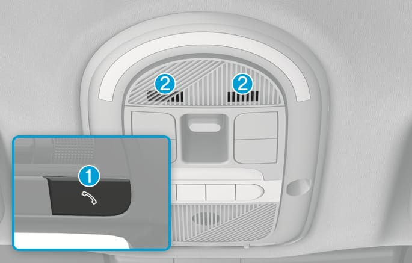

블루투스 핸즈프리

2C_Microphone
- 통화/통화 종료 버튼(스티어링 휠)
- 마이크(맵 램프)
블루투스를 이용해 스마트폰을 인포테인먼트 시스템과 연결하면 안전하고 편리하게 전화 기능을 사용할 수 있습니다.
-
안전한 곳에 정차한 후 스마트폰을 연결하십시오. 주행 중 인포테인먼트 시스템을 조작하는 경우 운전자의 주의가 분산되어 심각한 사고가 발생할 수 있습니다.
-
주행 중 스마트폰 사용은 법으로 금지되어 있습니다. 주행 중에는 직접 전화번호를 눌러 전화를 걸거나 스마트폰을 들고 통화하지 마십시오.
-
주행 중 스마트폰을 사용하면 앞뒤 차량의 주행 상태를 정확하게 인지하지 못하거나 돌발 상황에 대한 대처 능력이 감소해 심각한 사고가 발생할 수 있습니다.
-
블루투스 핸즈프리 기능은 블루투스 기능이 내장된 스마트폰에서만 사용할 수 있습니다.
-
기종에 따라 일부 스마트폰에서는 차량의 통화 버튼 대신 스마트폰의 통화 버튼을 사용해야 할 수 있습니다.
-
스마트폰의 출시 시점, 소프트웨어 버전, 이동통신사에 따라 일부 기능이 차량의 핸즈프리 기능과 호환되지 않을 수 있습니다.
-
스마트폰과 관련된 문제가 있는 경우 스마트폰 제조사에 문의하십시오.
블루투스(Bluetooth)란, 사용자 주변의 컴퓨터, 프린터, 스마트폰, PDA 등 다양한 정보통신 기기를 무선으로 연결할 때 사용되는 근거리 무선 네트워킹 기술 규격을 말합니다.